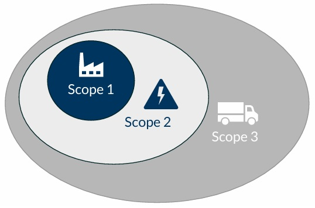
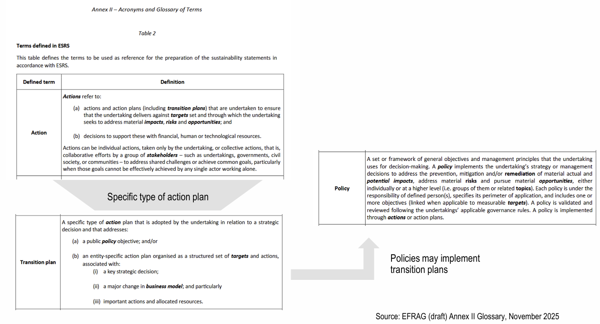

EU-Sustainability Reporting - E1
ESRS (EU Sustainability Reporting Standards) developed by EFRAG (EU Financial Reporting Advisory Group) provides mandatory reporting standards under the CSRD (Corporate Sustainability Reporting Directive) in the EU. ESRS define how companies must report on sustainability-related impacts, risks, and opportunities. They include two cross-cutting standards (ESRS 1 and ESRS 2) that explain the general principles, reporting structure, and required company-wide disclosures. The environmental standards (E1–E5) cover climate change, pollution, water and marine resources, biodiversity, and resource use and circular economy. The social standards (S1–S4) focus on a company’s own workforce, workers in the value chain, affected communities, and consumers. Finally, the governance standards (G1) addresses ethical business conduct, including corruption, lobbying, and transparency. ESRS operationalises DMA to assess both inward financial risk and outward environmental effect.
| Pillar | Code | Topic |
|---|---|---|
| Cross-cutting | ESRS 1 | General requirements |
| Cross-cutting | ESRS 2 | General disclosures |
| Environment | E1 | Climate change |
| Environment | E2 | Pollution prevention |
| Environment | E3 | Sustainable use of Water resources |
| Environment | E4 | Biodiversity protection |
| Environment | E5 | Resource use and circular economy |
| Social | S1 | Own workforce |
| Social | S2 | Workforce in the value chain |
| Social | S3 | Affected communities |
| Social | S4 | Consumers and end-users |
| Governance | G1 | Business conduct |

Case Study - Reporting Standards regarding E1
The chemical production company Kinove AG is in the process of preparing its sustainability report according to ESRS. The different sources of emissions and their amounts have to be correctly allocated to the scopes of emissions. Through its Double Materiality Assessment (DMA), the firm has identified all ESRS E1 Disclosure Requirements to be material for its report.
In the year 2018, Kinove AG has implemented a management strategy to reduce carbon emissions by the year 2035 by more than 50 % relative to the base year 2016. This strategy was approved by the both the executive and supervisory board and its progress is regularly reported. To achieve this objective, the firm plans to replace 20 % of its truck fleet with battery-powered vehicles that can be used for last-mile delivery of goods and are readily available to replace the current combustion engine based fleet. In the current reporting period, Kinove AG already achieved a GHG reduction of 10 % compared to 2016. While the Chief Marketing Officer suggested to support a carbon removal project that is freezing CO2 in Greenland, the CEO was not convinced of the initiative and decided not to support it. The €200,000 cost which would have been associated with the initiative were instead used to build a kindergarten that is open to both children from employees and the public.
The Kinove AG estimated that – for now – there are no potential financial effects due to climate related risks or opportunities. In addition to the activities described in Table 1, Kinove AG has GHG emissions of 195,813.33 tons in Scope 1, 47,378.25 tons in Scope 2, and 115,448.73 tons in Scope 3.
[A]. Emission Calculation
For each of the firm’s activity described in Table 1, let me explain which scopes of CO2 emissions are being addressed. Let’s calculate the amount of CO2 emissions associated with the selected scope in each situation.


activity 1 ⇒ {Scope 1}: Due to the company paid fuel card (controlled by the firm), a car usage as transportation is considered as a direct emission. Therefore, EMISSION = 5.7 tons in Scope 1. Although private car use (might be Scope 3) might need to be excluded from Scope 1, 95% ((227,760 – 11,388) / 227,760) were already associated with the business, thus for the sake of simplicity, we assign 100% of emission to Scope 1 while disclosing that car is also used privately.
activity 2 ⇒ {Scope 1 + 3}: Own freight truck fleet is a direct scope 1 emission while leased vehicles is scope 3. Therefore, \[
\begin{aligned}
EMISSION &= 0.25 \times 25 \times 223 \; \text{tons} = 1,393.75 \; \text{tons (in Scope 3)} \\
EMISSION &= 0.75 \times 25 \times 223 \; \text{tons} = 4,181.25 \; \text{tons (in Scope 1)}
\end{aligned}
\]
activity 3 ⇒ {Scope 2}: They are indirect emissions from electricity. Therefore,
\[ EMISSION = 70,000\;\text{kWh} \times 0.0004 \; \text{tons/kWh} + 1,200 \; \text{tons} = 1,228 \; \text{tons (in Scope 2)} \]
activity 4 ⇒ {Scope 3}: The CFO used a business jet (a chartered jet not under direct operational control), while four delegates and one intern used commercial flights. In response, the company attempted to offset the emissions by paying for the planting of 1,000 trees at €2.99 per tree, each covering 0.1 tons of emissions. However, the compensation is recorded as zero, because total emissions must be reported in gross terms under ESRS E1, AR 20(d)(Gross reporting means emissions must be disclosed before any offsets or compensation are deducted.). Based on the following, the total emission is EMISSION = 51.27 tons in Scope 3 (oneway).
\[
\begin{aligned}
EMISSION_{CFO} &= 9,178 \;\text{km} \div 750 \; \text{km/h} \times 2 \; \text{tons/h} = 24.47 \; \text{tons (in Scope 3)} \\
EMISSION_{del} &= 4 \times 5.9 \; \text{tons/h} = 23.6 \; \text{tons (in Scope 3)} \\
EMISSION_{int} &= 1 \times 3.2 \; \text{tons/h} = 3.2 \; \text{tons (in Scope 3)}
\end{aligned}
\]
activity 5 ⇒ {Scope 3}: They are indirect emissions from employee commutes. Therefore,
\[
\begin{aligned}
EMISSION_{old} &= 1,500 \times 20 \;\text{days} \times 12 \;\text{months} \times \text{x} \; \text{tons} = 25,000 \; \text{tons (in Scope 3); x=5/72} \\
EMISSION_{a} &= 750 \times 16 \;\text{days} \times 12 \;\text{months} \times 5/72 \; \text{tons} = 10,000 \; \text{tons (in Scope 3)} \\
EMISSION_{b} &= 750 \times 20 \;\text{days} \times 12 \;\text{months} \times 5/72 \; \text{tons} = 12,500 \; \text{tons (in Scope 3)}
\end{aligned}
\]
activity 6 ⇒ {Scope 3}: They are indirect emissions from waste management. However, as the firm donates the items, the indirect emissions from end of life waste management (for waste generated in operations, Draft ESRS E1 AR 26 “Waste generated in operations”) are not considered. The waste is no longer the company’s waste once it is donated. Here, Scope 3 would only consider direct waste or downstream waste through sold products. Therefore, EMISSION = 0 tons in Scope 3.
[B]. Developing Disclosure Requirements
Now, let’s prepare the disclosure requirements of ESRS E1 as far as possible considering the information provided above. Whenever information is not available, we state what the firm shall provide in terms of disclosures.

Disclosure Requirement E1-1 – Transition plan for climate change mitigation:
- We can describe the entity’s transition plan to reduce carbon impact:
- Target to reduce emissions by 50% by the year 2035.
- Key actions include replacing 20% of its truck fleet with battery-powered vehicles
- Plan adoption by executives and supervisory board
Disclosure Requirement E1-2 – Identification of climate-related risks and scenario analysis:
- No further information available here, but we can describe ways to access short-term, medium-term, long-term business activities in light of climate related risks, differentiating the risk into physical or transition risk…and methodologies? scenario analysis?
Disclosure Requirement E1-3 – Resilience in relation to climate change:
- No further information available here, but we can describe the resilience of the firm’s strategy and business model to climate-related risks.
- include the results of a climate resilience analysis
- include significant areas of uncertainty in the assessment
- include business model to climate change over short, medium and long term
Disclosure Requirement E1-4 – Policies related to climate change mitigation and adaptation:
- No further information available here, but we can describe policies that address climate change mitigation and adaptation IRO.
Disclosure Requirement E1-5 – Actions and resources in relation to climate change mitigation and adaptation:
- We can describe key actions to address climate change mitigation and adaptation.
- purchasing EV to replace the old truck fleet.
- Already achieved 10% reduction, so we expect another 10% next year
Disclosure Requirement E1-6 – Targets related to climate change:
- We can describe targets related to climate change mitigation and adaptation.
- Target of 50 % reduction by 2035 relative to base year (2016)
Disclosure Requirement E1-7 – Energy consumption and mix:
- Information is available only partially, but we can describe energy consumption and composition of energy sources consumed.
Disclosure Requirement E1-8 – Gross Scope 1,2,3 GHG emissions:
- Total Emission: 200,000.28 tons + 48,606.25 tons + 139,445.02 tons = 388051,55 tons
- Scope 1: 195,813.33 tons + 4,181.25 tons + 5.7 tons = 200,000.28 tons
- Scope 2: 47,378.25 tons + 1,228 tons = 48,606.25 tons
- Scope 3: 115,448.73 tons + 23,996.29 tons = 139,445.02 tons
Disclosure Requirement E1-9 – GHG removals and GHG mitigation projects financed through carbon credits:
- No actions were undertaken during the reporting year.
Note that, according to ESRS, transition plans show the relationship between firms’ sustainability activities, climate goals and corporate strategies. Policies refer to tactics within the firm to address specific sustainability matters covered by the transition plan.

Bibliography
[1] Corporate Sustainability Reporting Directive: Directive (EU) 2022/2464 of December 14, 2022. Available at https://eur-lex.europa.eu/legal-content/EN/TXT/?uri=CELEX%3A02022L2464-20250417 (Amended April 2025).
[2] ESRS E1: Climate change. Available at https://www.efrag.org/sites/default/files/media/document/2025-12/November_2025_ESRS_E1.pdf (November 2023).